Przetwarzanie równoległe i strumieniowe
Wykład 6
Algorytmy równoległe


Plan wykładu
przyspieszenie, efektywność, prawo Amdahla i Gustafsona, praca i rozpiętość
dekompozycja danych i funkcjonalna, metodologia Fostera (PCAM), ziarnistość zadań
drzewo redukcji, scan Hillisa-Steele'a
bąbelkowe odd-even, merge sort, scalanie odd-even
wyszukiwanie binarne i p-arne, BFS warstwami, DFS i kradzież pracy
mnożenie macierzy, kolorowanie grafów (Jones-Plassmann)
Przykłady w Pythonie 3.13. Czasy zmierzono na komputerze z 12 rdzeniami logicznymi, więc u Ciebie będą inne, ale proporcje podobne.
Algorytmy równoległe
Algorytm równoległy wykonuje obliczenia równocześnie na wielu procesorach lub rdzeniach, żeby rozwiązać problem szybciej albo rozwiązać większy problem w tym samym czasie.
Opłaca się przy dużych problemach: dużo danych albo kosztowne operacje, które da się podzielić na mniejsze, niezależne kroki.
Wykłady 1-5: jak uruchamiać i synchronizować wątki i procesy. Dziś: jak podzielić samo obliczenie, ile można zyskać i gdzie leżą ograniczenia.
https://ifunny.co/picture/the-prof-me-my-parallel-algorithm-that-should-not-work-CjPopSk19
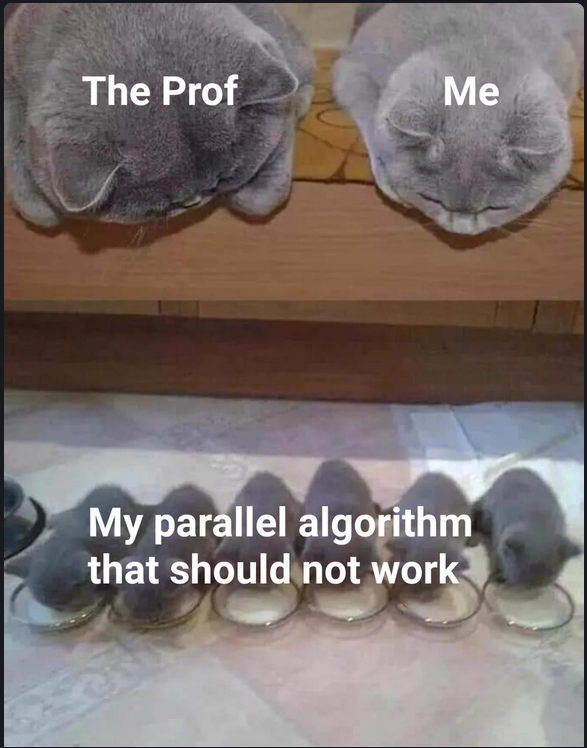
Przyspieszenie (speedup) i efektywność
T1 to czas najlepszego algorytmu sekwencyjnego, a Tp czas na p procesorach.
- Ideał to przyspieszenie liniowe: S(p) = p, E(p) = 1. W praktyce przeszkadza narzut na tworzenie zadań, komunikację i synchronizację.
- Zdarza się przyspieszenie superliniowe (S > p), gdy fragmenty danych mieszczą się w pamięci podręcznej rdzeni.
Prawo Amdahla (1967): jeśli tylko ułamek f programu da się zrównoleglić, to
90% czasu programu da się zrównoleglić. Jakie jest maksymalne przyspieszenie, nawet przy nieskończenie wielu procesorach?
1 / (1 − 0,9) = 10. Sekwencyjne 10% zawsze zostaje: nawet gdy reszta trwa zero, program trwa co najmniej 10% pierwotnego czasu.
Prawo Amdahla i prawo Gustafsona
Amdahl: stały rozmiar problemu, liczymy go szybciej.
Gustafson (1988): rozmiar rośnie z liczbą procesorów, a f mierzymy na maszynie równoległej: S = (1 − f) + f·p.
Praca i rozpiętość (work & span)
Obliczenie to graf zależności (DAG). Praca T1 to liczba wszystkich operacji, a rozpiętość T∞ (span, ścieżka krytyczna) to najdłuższy łańcuch zależnych operacji.
Rozpiętość to granica: nawet nieskończenie wiele procesorów nie policzy szybciej niż T∞.
Suma n liczb drzewem: jaka jest rozpiętość?
Każdy poziom drzewa połowi liczbę elementów, więc poziomów jest log₂ n. Praca pozostaje O(n), a równoległość T₁/T∞ = n / log n.
Jak dzielić: dane czy operacje?
Równoległe wersje znanych algorytmów korzystają z dwóch sposobów podziału pracy:
- Dekompozycja danych (domain decomposition): dzielimy dane na p części, każdy procesor liczy swoją, na końcu łączymy wyniki. Nie zawsze się da, gdy części zależą od siebie.
- Dekompozycja funkcjonalna (functional decomposition): dzielimy operacje między procesory. Wspólne dane wymagają synchronizacji (wykłady 3-5).
Metodologia Fostera (PCAM)
Ian Foster, Designing and Building Parallel Programs (1995), opisuje cztery kroki projektowania algorytmu równoległego:
- Kroki 1-2 nie zależą od maszyny: szukamy całej dostępnej równoległości.
- Kroki 3-4 dopasowują algorytm do konkretnej liczby procesorów i kosztu komunikacji.
PCAM krok po kroku
| Etap | Co robimy | Pytanie kontrolne |
|---|---|---|
| Podział (partitioning) | Dzielimy obliczenia i dane na jak najwięcej małych zadań: dekompozycja drobnoziarnista (fine-grained). | Czy zadań jest o rząd wielkości więcej niż procesorów? |
| Komunikacja (communication) | Zadania rzadko są niezależne: obliczenie jednego potrzebuje danych innego. Ustalamy, co i między kim musi przepływać. | Czy każde zadanie komunikuje się z niewieloma sąsiadami? Czy komunikacja może iść równolegle? |
| Aglomeracja (agglomeration) | Tysiące drobnych zadań na kilku rdzeniach to głównie narzut. Łączymy zadania w większe (gruboziarniste), by mniej tworzyć i mniej komunikować. | Czy obliczenia w zadaniu wyraźnie przeważają nad kosztem jego utworzenia i przesłania danych? |
| Mapowanie (mapping) | Przypisujemy zadania do procesorów: niezależne na różne procesory (współbieżność), często komunikujące się na ten sam (lokalność). | Czy obciążenie jest zrównoważone? Statycznie czy dynamicznie (pula zadań)? |
Na zwykłym komputerze mapowanie robi za nas system operacyjny albo pula wątków lub procesów (concurrent.futures, wykład 7). Ręczne mapowanie wraca w klastrach: MPI, Spark, Flink.
Fibonacci: jak nie zrównoleglać
import threading, time
def fib_watki(n, wynik, i):
if n < 2:
wynik[i] = n
return
w = [0, 0] # tu wątki potomne zapiszą wyniki
t1 = threading.Thread(target=fib_watki, args=(n - 1, w, 0))
t2 = threading.Thread(target=fib_watki, args=(n - 2, w, 1))
t1.start(); t2.start()
t1.join(); t2.join()
wynik[i] = w[0] + w[1]
def fib(n):
return n if n < 2 else fib(n - 1) + fib(n - 2)
start = time.perf_counter()
w = [0]
fib_watki(18, w, 0)
print("wątki: ", w[0], f"{time.perf_counter() - start:.4f} s")
start = time.perf_counter()
print("sekwencyjnie:", fib(18), f"{time.perf_counter() - start:.4f} s")
Pomysł z H5P: każde wywołanie rekurencyjne w osobnym wątku.
wątki: 2584 1.5925 s sekwencyjnie: 2584 0.0011 s
fib(18)tworzy 8360 wątków, a wynik przychodzi ok. 1000 razy wolniej.- Zadanie (jedno dodawanie) jest o rzędy wielkości tańsze niż utworzenie wątku: to podział bez aglomeracji.
- W CPythonie z GIL wątki i tak nie liczą równolegle (wykład 1).
Threadnie zwraca wyniku: przekazujemy listę, do której wątek go zapisze.
Fork-join z progiem (aglomeracja)
import time
from concurrent.futures import ProcessPoolExecutor
def fib(n):
return n if n < 2 else fib(n - 1) + fib(n - 2)
def podziel(n, prog):
"""Rozwija górę drzewa rekursji: fib(n) = suma fib(liść)."""
if n < prog:
return [n]
return podziel(n - 1, prog) + podziel(n - 2, prog)
if __name__ == "__main__":
N = 35
start = time.perf_counter()
print("sekwencyjnie:", fib(N), f"{time.perf_counter() - start:.2f} s")
for prog in (35, 30, 25, 15):
zadania = podziel(N, prog)
start = time.perf_counter()
with ProcessPoolExecutor() as ex: # tu: 12 procesów
wynik = sum(ex.map(fib, zadania))
print(f"próg {prog}: liczba zadań {len(zadania):5},",
wynik, f"{time.perf_counter() - start:.2f} s")
sekwencyjnie: 9227465 1.65 s próg 35: liczba zadań 2, 9227465 1.29 s próg 30: liczba zadań 21, 9227465 0.64 s próg 25: liczba zadań 233, 9227465 0.55 s próg 15: liczba zadań 28657, 9227465 5.20 s
- Rozwijamy tylko górę drzewa rekursji, liście poniżej progu liczą procesy.
- Za grubo (2 zadania): pracują najwyżej 2 rdzenie.
- Za drobno (28657 zadań): przesyłanie zadań kosztuje więcej niż liczenie.
- W sam raz: kilka zadań na rdzeń. Ok. 3×, a nie 12×: start procesów, nierówne zadania.
Nie zlecaj podzadań z wnętrza zadania w tej samej puli i nie czekaj na nie: gdy wszyscy pracownicy czekają, nikt nie liczy (zakleszczenie, wykład 4).
Sprawdź się
Dlaczego wersja z progiem 15 (28657 zadań) jest wolniejsza od sekwencyjnej?
Każde zadanie trzeba zserializować (pickle), przesłać do procesu i odebrać wynik. fib(14) liczy się w mikrosekundach, więc dominuje komunikacja. Procesy mają osobne interpretery i GIL im nie przeszkadza. Pomaga parametr chunksize w ex.map, który wysyła zadania paczkami.
Program działa 100 s, z czego 20 s to wczytanie danych, którego nie da się zrównoleglić. Ile najwyżej potrwa na 8 rdzeniach?
20 s + 80 s / 8 = 30 s, czyli przyspieszenie 3,3× (prawo Amdahla z f = 0,8). Granica dla nieskończenie wielu rdzeni to 20 s, czyli 5×.
Redukcja i suma prefiksowa (scan)
Redukcja i scan w Pythonie
from itertools import accumulate
def redukcja_drzewo(x):
x = list(x)
while len(x) > 1: # każdy poziom: pary niezależne
x = [sum(x[i:i + 2]) for i in range(0, len(x), 2)]
print("poziom:", x)
return x[0]
def scan_hillis_steele(x):
x, d = list(x), 1
while d < len(x): # log2(n) kroków
x = [x[i] + x[i - d] if i >= d else x[i] for i in range(len(x))]
print(f"d = {d}:", x) # w kroku: wszystkie i naraz
d *= 2
return x
dane = [3, 1, 7, 0, 4, 1, 6, 3]
redukcja_drzewo(dane)
scan_hillis_steele(dane)
print("accumulate:", list(accumulate(dane)))
poziom: [4, 7, 5, 9] poziom: [11, 14] poziom: [25] d = 1: [3, 4, 8, 7, 4, 5, 7, 9] d = 2: [3, 4, 11, 11, 12, 12, 11, 14] d = 4: [3, 4, 11, 11, 15, 16, 22, 25] accumulate: [3, 4, 11, 11, 15, 16, 22, 25]
- Drzewo działa, bo dodawanie jest łączne: (a + b) + c = a + (b + c). Tak samo
*,max,min, ale nie-. functools.reduceiitertools.accumulatez wykładu 2 liczą tę samą wartość, tylko po kolei.- Hillis-Steele: rozpiętość log₂ n, ale praca O(n log n). Algorytm Blellocha ma pracę O(n) przy rozpiętości 2 log₂ n.
- Scan to klocek wielu algorytmów: równoległy filtr (gdzie zapisać element?), radix sort, sumy bieżące w strumieniach.
Algorytmy sortujące
https://medium.com/@ruth_obe/sorting-array-of-objects-in-javascript-with-sort-c71faeb174ef
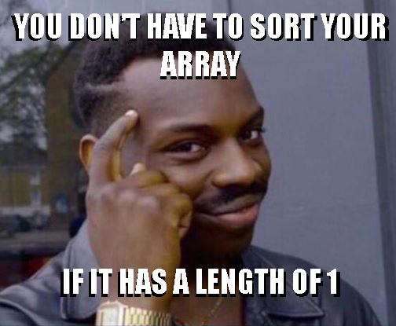
Sortowanie bąbelkowe równolegle
Bubble sort porównuje sąsiednie pary i zamienia je, gdy są w złej kolejności. Złożoność O(n²).
Najprostsze zrównoleglenie to dekompozycja danych:
- dzielimy tablicę na p części po n/p elementów,
- każdy procesor sortuje swoją część: O((n/p)²),
- scalamy p posortowanych części: O(n log p) (kopiec,
heapq.merge).
Wersja H5P podawała max(O(n), O(n²/p)), pomijając koszt scalania. Bez kroku 3 tablica nie jest posortowana.
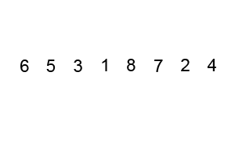
https://pl.wikipedia.org/wiki/Sortowanie_b%C4%85belkowe#/media/Plik:Bubble-sort-example-300px.gif
n = 10 000, p = 4. Ile razy mniej porównań w kroku 2 niż w całym bubble sorcie?
Każdy procesor robi (n/4)² = n²/16 porównań, a procesory działają równocześnie. Ciekawostka: nawet sekwencyjne posortowanie 4 części i scalenie jest ok. 4× szybsze, bo O(n²) karze za duże n.
Bąbelkowe potokowo („falowo”)
Można też zrównoleglić kolejne przebiegi: proces P2 zaczyna swój przebieg, gdy P1 przesunie się o dwie pozycje w prawo, potem rusza P3 i tak dalej.
- Żaden proces nie może wyprzedzić poprzedniego ani dotknąć jego pary: potrzebna synchronizacja sąsiadów (semafory, wykład 3).
- Przebiegi idą jak fale: n − 1 przebiegów, każdy startuje 2 kroki po poprzednim, więc całość trwa O(n) zamiast O(n²), ale przy n procesach.
- To potok (pipeline): ta sama idea co potok generatorów z wykładu 2 i operatory w systemach strumieniowych.
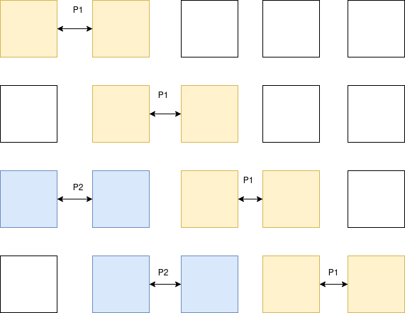
Sortowanie odd-even (transposition sort)
Wariant bąbelkowego z dwiema naprzemiennymi fazami:
- parzysta: pary (0,1), (2,3), (4,5), …
- nieparzysta: pary (1,2), (3,4), (5,6), …
Pary w fazie są rozłączne, więc wszystkie porównania fazy idą równolegle. Po n fazach tablica jest posortowana.
Sekwencyjnie nie zyskujemy nic, ale z n/2 procesorami czas spada do O(n). Praca pozostaje O(n²).
Odd-even w Pythonie
def odd_even_sort(a):
a = list(a)
n = len(a)
for faza in range(n): # n faz wystarcza zawsze
start = faza % 2 # 0: od pary (0,1), 1: od (1,2)
# pary w fazie są rozłączne -> porównania mogą iść równolegle
for i in range(start, n - 1, 2):
if a[i] > a[i + 1]:
a[i], a[i + 1] = a[i + 1], a[i]
print(f"faza {faza}:", a)
return a
odd_even_sort([6, 5, 3, 1, 8, 7, 2, 4])
faza 0: [5, 6, 1, 3, 7, 8, 2, 4] faza 1: [5, 1, 6, 3, 7, 2, 8, 4] faza 2: [1, 5, 3, 6, 2, 7, 4, 8] faza 3: [1, 3, 5, 2, 6, 4, 7, 8] faza 4: [1, 3, 2, 5, 4, 6, 7, 8] faza 5: [1, 2, 3, 4, 5, 6, 7, 8] faza 6: [1, 2, 3, 4, 5, 6, 7, 8] faza 7: [1, 2, 3, 4, 5, 6, 7, 8]
- Przy p < n procesorach każdy dostaje blok n/p elementów, a sąsiedzi zamiast zamiany scalają bloki i dzielą je na pół (compare-split).
- Fazy 6 i 7 nic nie zmieniły: można przerwać po dwóch fazach bez zamian.
Sortowanie przez scalanie (merge sort)
Merge sort dzieli listę na pół, rekurencyjnie sortuje obie połowy, a następnie scala je w posortowaną listę. Złożoność O(n log n).
To klasyczne dziel i zwyciężaj: dwie połówki są niezależne, więc można je sortować równolegle (wzorzec fork-join).
Problem: każde scalanie czeka na oba wyniki, a ostatnie scala n elementów jednym procesorem.
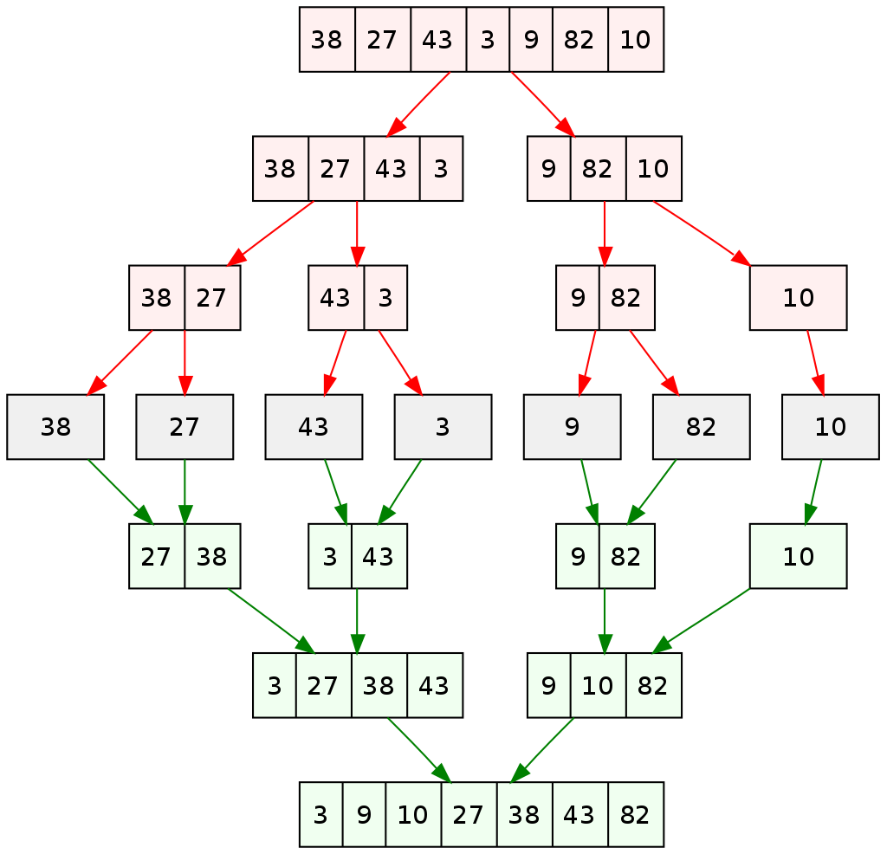
https://en.wikipedia.org/wiki/Merge_sort#/media/File:Merge_sort_algorithm_diagram.svg
Merge sort: drzewo procesorów
Zakładając nieograniczoną liczbę procesorów, przypisujemy niezależne operacje każdego poziomu drzewa do osobnych procesorów, które równolegle dzielą i scalają.
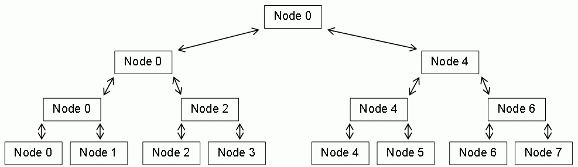
https://stackoverflow.com/questions/61910607/parallel-merge-sort-using-mpi
- Proces 0 zatrzymuje lewą połowę, a prawą wysyła do procesu 4. Na kolejnym poziomie 0 → 2 i 4 → 6, potem 0 → 1, 2 → 3, … (typowy schemat w MPI).
- Scalanie wraca w górę drzewa: dzieci odsyłają posortowane części do rodziców.
Merge sort: ile naprawdę zyskujemy?
Ile wynosi T₁/T∞ dla n = 1 048 576 (2²⁰) elementów, gdy scalanie jest sekwencyjne?
Praca n·log₂ n = 20n, rozpiętość n + n/2 + … ≈ 2n, więc przyspieszenie ok. log₂ n / 2 = 10, niezależnie od liczby procesorów. Wąskim gardłem jest sekwencyjne scalanie. Rozwiązanie: równoległe scalanie, np. odd-even (za chwilę), daje rozpiętość O(log² n).
Merge sort: podział na p części
Praktyczne podejście: podział tablicy na p części, sortowanie każdej na osobnym procesorze, a potem scalanie posortowanych części.
- Liczba części = liczba procesorów (aglomeracja), a nie n.
- Scalanie w parach daje log₂ p faz. W każdej fazie pracuje o połowę mniej procesorów, a między fazami potrzebna jest bariera.
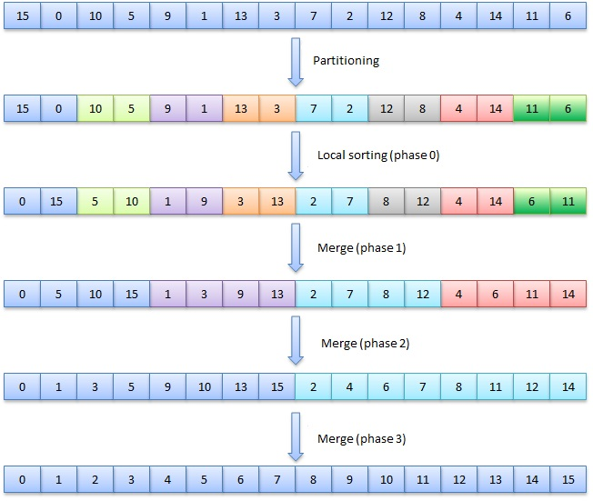
https://devblogs.microsoft.com/pfxteam/parallel-merge-sort-using-barrier/
Podział na p części w Pythonie
import heapq, random, time
from concurrent.futures import ProcessPoolExecutor
def merge_sort(a):
if len(a) <= 1:
return a
mid = len(a) // 2
return list(heapq.merge(merge_sort(a[:mid]), merge_sort(a[mid:])))
def rownolegle(a, p):
k = -(-len(a) // p) # ceil(n / p)
czesci = [a[i:i + k] for i in range(0, len(a), k)] # 1. podział
t0 = time.perf_counter()
with ProcessPoolExecutor(p) as ex:
posortowane = list(ex.map(merge_sort, czesci)) # 2. sortowanie
t1 = time.perf_counter()
wynik = list(heapq.merge(*posortowane)) # 3. scalanie
t2 = time.perf_counter()
print(f"p = {p}: sortowanie {t1 - t0:.2f} s + scalanie {t2 - t1:.2f} s")
return wynik
if __name__ == "__main__":
dane = [random.random() for _ in range(500_000)]
for p in (1, 2, 4, 8):
assert rownolegle(dane, p) == sorted(dane)
p = 1: sortowanie 3.10 s + scalanie 0.02 s p = 2: sortowanie 1.59 s + scalanie 0.08 s p = 4: sortowanie 1.29 s + scalanie 0.18 s p = 8: sortowanie 1.12 s + scalanie 0.23 s
- Z 2 procesami prawie 2× szybciej, z 8 już tylko ok. 2,8×.
- Scalanie jest sekwencyjne i rośnie z p (prawo Amdahla w praktyce).
- Każda część jest serializowana i wysyłana do procesu: to koszt komunikacji.
Wbudowany sorted(dane) (Timsort w C) robi to samo w ok. 0,1 s. Zrównoleglaj dopiero najlepszy algorytm sekwencyjny.
Scalanie odd-even (odd-even merge)
Scalanie posortowanych list A i B (pozycje liczymy od 1):
- Podziel A na An (pozycje nieparzyste) i Ap (parzyste). Tak samo B na Bn i Bp.
- Scal Ap z Bn w C, a An z Bp w D. Oba scalenia są niezależne.
- Elementy 2i−1 i 2i wyniku to Ci i Di w pewnej kolejności: wystarczy jedno porównanie na parę, wszystkie pary naraz.
Krok 2 stosujemy rekurencyjnie, więc scalanie ma rozpiętość O(log n), a sortowanie oparte na nim O(log² n). To idea sieci sortujących Batchera (1968), używanych m.in. na GPU.
niebieskie: pozycje nieparzyste, żółte: parzyste
Scalanie odd-even w Pythonie
import random
from heapq import merge
def odd_even_merge(A, B):
# pozycje liczone od 1, jak na slajdzie: A_n = A[0::2], A_p = A[1::2]
C = list(merge(A[1::2], B[0::2])) # A_p z B_n
D = list(merge(A[0::2], B[1::2])) # A_n z B_p
wynik = []
for c, d in zip(C, D): # każda para niezależnie -> równolegle
wynik += [min(c, d), max(c, d)]
return C, D, wynik
print(odd_even_merge([1, 4, 6, 7], [2, 3, 8, 9]))
for _ in range(100_000): # test na losowych danych
n = random.randint(1, 8)
A = sorted(random.choices(range(20), k=n))
B = sorted(random.choices(range(20), k=n))
assert odd_even_merge(A, B)[2] == sorted(A + B)
print("OK")
([2, 4, 7, 8], [1, 3, 6, 9], [1, 2, 3, 4, 6, 7, 8, 9]) OK
Na pierwszy rzut oka nic nie zyskujemy: zamiast jednego scalenia mamy trzy kroki.
- Ale C i D liczą się równolegle, każde z połową danych.
- Ostatni krok to n/2 niezależnych porównań: jeden procesor na parę.
- Zamiast dowodu: test na 100 000 losowych par list. Taki test własności (property-based testing) warto pisać dla każdego algorytmu równoległego.
Wyszukiwanie binarne równolegle
Binary search połowi przedział w każdym kroku: O(log₂ n) porównań w posortowanej tablicy.
Naiwnie: dzielimy tablicę na p części i każdy procesor szuka binarnie w swojej.
- Kroków jest log₂(n/p) = log₂ n − log₂ p. Dla n = 10⁶ i p = 4 to 18 zamiast 20, a tylko jeden procesor coś znajdzie.
- Potrzebny równy podział tablicy i komunikacja: kto znalazł, musi powiadomić pozostałych.
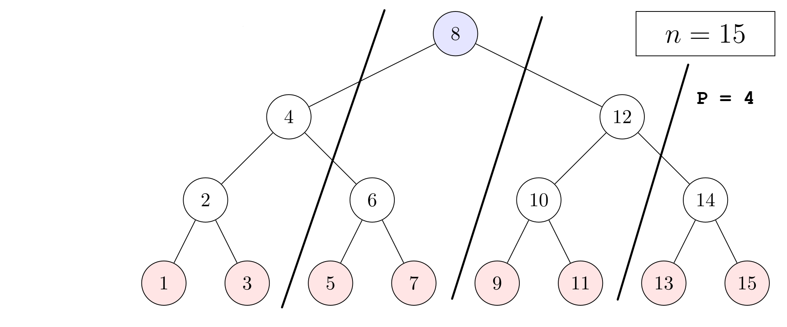
na podstawie https://en.wikipedia.org/wiki/Binary_search_algorithm#/media/File:Binary_search_complexity.svg
Wyszukiwanie p-arne (p-ary search)
Lepiej, gdy wszystkie p procesory pracują nad tym samym przedziałem: każdy porównuje klucz z innym punktem podziału.
Zysk to tylko czynnik log₂(p + 1). Wyszukiwanie jest już tak szybkie, że w praktyce równolegle obsługujemy wiele zapytań naraz (każde zapytanie to osobne zadanie).
n = 10⁶, p = 4. Ile kroków wyszukiwania p-arnego?
Przedział maleje 5 razy na krok: log₅ 10⁶ ≈ 8,6, czyli 9 kroków. Binarnie 20, a naiwny podział na 4 części daje 18.
Przeszukiwanie wszerz (BFS)
BFS (breadth-first search) zaczyna od wierzchołka startowego i przeszukuje graf warstwami: najpierw sąsiedzi, potem sąsiedzi sąsiadów, aż odwiedzi wszystkie osiągalne wierzchołki.
Wierzchołki odkryte, ale jeszcze nieprzetworzone, czekają w kolejce FIFO.
BFS znajduje najkrótsze ścieżki (liczbę krawędzi) w grafie nieważonym.
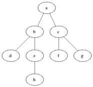
https://pl.wikipedia.org/wiki/Przeszukiwanie_wszerz#/media/Plik:Animated_BFS.gif
BFS warstwami (level-synchronous BFS)
Wszystkie wierzchołki jednej warstwy można przetwarzać równolegle. Warstwy idą po kolei.
- granica (frontier): bieżąca warstwa,
- następna: wierzchołki odkryte w tym kroku,
- między warstwami bariera.
Kliknij wierzchołek, by zacząć od niego. Pomarańczowa obwódka: wierzchołek odkryty naraz przez kilku rodziców.
BFS równolegle: które wyścigi szkodzą?
Wierzchołki v i w z warstwy i mogą jednocześnie odkryć tego samego sąsiada x.
- Łagodny wyścig: obaj zapiszą
poziom[x] = i + 1, więc wynik jest ten sam, arodzic[x]= v albo w jest równie poprawny. W C/C++/Javie to jednak formalnie data race: wierzchołek „zajmuje się” atomowym compare-and-swap. - Szkodliwy wyścig: dopisywanie do wspólnej, niesynchronizowanej kolejki. Kolejność w warstwie nie ma znaczenia, ale dwa równoczesne zapisy mogą zgubić element.
H5P twierdził, że wyścig o kolejkę „nie jest problemem”. Problemem nie jest kolejność, ale utrata danych (wykład 4).
Które operacje wątków przetwarzających jedną warstwę wymagają synchronizacji? (zaznacz wszystkie)
Wspólny licznik += to klasyczny wyścig (odczyt-modyfikacja-zapis). Niesynchronizowana lista w C może zgubić element. Sam odczyt niezmiennego grafu jest bezpieczny, a zapis tej samej wartości poziomu jest łagodny.
Rozwiązanie: dwie struktury (bieżąca i następna warstwa), lokalne listy każdego wątku scalane po warstwie, potem bariera i zamiana ról.
BFS warstwami w Pythonie
from concurrent.futures import ThreadPoolExecutor
graf = {0: [1, 2, 3], 1: [0, 4], 2: [0, 4, 5], 3: [0, 5, 6], 4: [1, 2, 7],
5: [2, 3, 7, 8], 6: [3, 8], 7: [4, 5, 9], 8: [5, 6, 9], 9: [7, 8]}
def sasiedzi(v): # praca jednego zadania
return [(v, u) for u in graf[v]]
def bfs_warstwami(start, ex):
poziom, rodzic = {start: 0}, {start: None}
granica = [start] # bieżąca warstwa (frontier)
while granica:
nastepna = []
for lista in ex.map(sasiedzi, granica): # 1. równolegle
for v, u in lista: # 2. scalanie w jednym wątku
if u not in poziom:
poziom[u], rodzic[u] = poziom[v] + 1, v
nastepna.append(u)
print(f"warstwa {poziom[granica[0]]}: {granica} -> {nastepna}")
granica = nastepna # 3. bariera: następna warstwa
return poziom, rodzic
with ThreadPoolExecutor(4) as ex:
poziom, rodzic = bfs_warstwami(0, ex)
sciezka = [9] # najkrótsza ścieżka po rodzicach
while rodzic[sciezka[-1]] is not None:
sciezka.append(rodzic[sciezka[-1]])
print("ścieżka 0 -> 9:", sciezka[::-1])
warstwa 0: [0] -> [1, 2, 3] warstwa 1: [1, 2, 3] -> [4, 5, 6] warstwa 2: [4, 5, 6] -> [7, 8] warstwa 3: [7, 8] -> [9] warstwa 4: [9] -> [] ścieżka 0 -> 9: [0, 1, 4, 7, 9]
- Równolegle tylko czytamy graf, a zapis robi jeden wątek: brak wyścigów.
- Ten sam schemat (map po warstwie, scalenie, bariera) stosują Spark GraphX i Pregel.
- Z GIL wątki pomagają, gdy praca to I/O. Np. crawler WWW: „sąsiedzi” to linki pobranej strony.
Przeszukiwanie w głąb (DFS)
DFS (depth-first search) idzie od wierzchołka startowego jak najgłębiej, a gdy nie ma nieodwiedzonych sąsiadów, wraca. Używa stosu (jawnego albo stosu wywołań w rekurencji).
- Zbiór odwiedzonych jest obowiązkowy: bez niego DFS w grafie z cyklem zapętli się w nieskończoność.
- Nie gwarantuje najkrótszych ścieżek.
- Zastosowania: sortowanie topologiczne, wykrywanie cykli (np. zakleszczeń w grafie oczekiwania, wykład 4), spójne składowe, przeszukiwanie z nawrotami (sudoku, gry, AI).
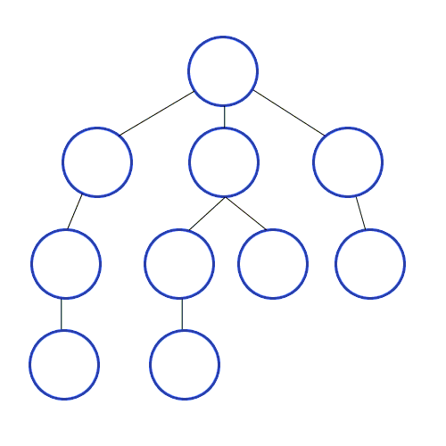
https://en.wikipedia.org/wiki/File:Depth-First-Search.gif
DFS: kradzież pracy (work stealing)
Dzielimy przestrzeń przeszukiwania na rozłączne poddrzewa. Każdy procesor przeszukuje swoje w głąb, asynchronicznie i bez komunikacji.
- Poddrzewa mają różne rozmiary, więc ktoś skończy wcześniej. Wtedy kradnie nieprzeszukane poddrzewo innemu procesorowi.
- Właściciel bierze zadania z dołu swojej kolejki (LIFO, jak DFS), a złodziej z góry: najstarsze zadania to zwykle największe poddrzewa, więc kradzieży jest mało.
- Tak działają
ForkJoinPoolw Javie, Intel TBB, Rayon w Ruście i planista Go (więcej o pulach na wykładzie 7).
Uwaga: DFS w ściśle określonej kolejności jest z natury sekwencyjny (P-zupełny). Równoległy DFS odwiedza wierzchołki w innej kolejności, co przy przeszukiwaniu nie przeszkadza.
Mnożenie macierzy
Macierz A (n × m) razy B (m × k) daje C (n × k):
Każdy z n·k elementów to niezależny iloczyn skalarny wiersza A i kolumny B: korzysta z niezmienianych danych, wyniki na siebie nie wpływają, kolejność jest dowolna.
Przykład z H5P (z poprawionym wynikiem): [[2, 3], [1, 4]] · [[5, 6], [7, 8]] = [[2·5 + 3·7, 2·6 + 3·8], [1·5 + 4·7, 1·6 + 4·8]] = [[31, 36], [33, 38]]
Kliknij komórkę C.
Kolor komórki C = zadanie (procesor), które ją liczy.
Mnożenie macierzy równolegle
import random, time
from concurrent.futures import ProcessPoolExecutor
from functools import partial
def wiersz_razy(BT, wiersz): # jedno zadanie = jeden wiersz wyniku
return [sum(a * b for a, b in zip(wiersz, kol)) for kol in BT]
def matmul(A, B, ex=None):
f = partial(wiersz_razy, list(zip(*B))) # kolumny B = wiersze B^T
wiersze = ex.map(f, A, chunksize=16) if ex else map(f, A)
return list(wiersze)
if __name__ == "__main__":
print(matmul([[2, 3], [1, 4]], [[5, 6], [7, 8]]))
n = 300
A = [[random.random() for _ in range(n)] for _ in range(n)]
B = [[random.random() for _ in range(n)] for _ in range(n)]
start = time.perf_counter()
C1 = matmul(A, B)
print(f"sekwencyjnie: {time.perf_counter() - start:.2f} s")
start = time.perf_counter()
with ProcessPoolExecutor() as ex:
C2 = matmul(A, B, ex)
print(f"równolegle: {time.perf_counter() - start:.2f} s")
assert C1 == C2
[[31, 36], [33, 38]] sekwencyjnie: 1.89 s równolegle: 0.84 s
- Zadanie na komórkę (90 000 zadań) to za drobne ziarno. Zadanie na wiersz, wysyłane paczkami po 16 (
chunksize), to aglomeracja. - Każdy proces dostaje kopię B: przy dużych macierzach dzielimy na bloki (algorytmy Cannona, SUMMA), by ograniczyć komunikację.
NumPy: A @ B dla 300 × 300 to ok. 0,006 s. BLAS używa instrukcji wektorowych (SIMD), wielu wątków i zwalnia GIL.
Kolorowanie grafów
Kolorowanie wierzchołków grafu G = (V, E) to funkcja f: V → C taka, że f(u) ≠ f(v) dla każdej krawędzi {u, v} ∈ E: sąsiedzi mają różne kolory.
Szukamy jak najmniejszej liczby kolorów (to problem NP-trudny), więc w praktyce używamy heurystyk zachłannych.
- Zastosowania: plan egzaminów bez kolizji, przydział rejestrów w kompilatorze, częstotliwości nadajników.
- W obliczeniach równoległych: wierzchołki jednego koloru tworzą zbiór niezależny, więc można je aktualizować jednocześnie bez wyścigów.
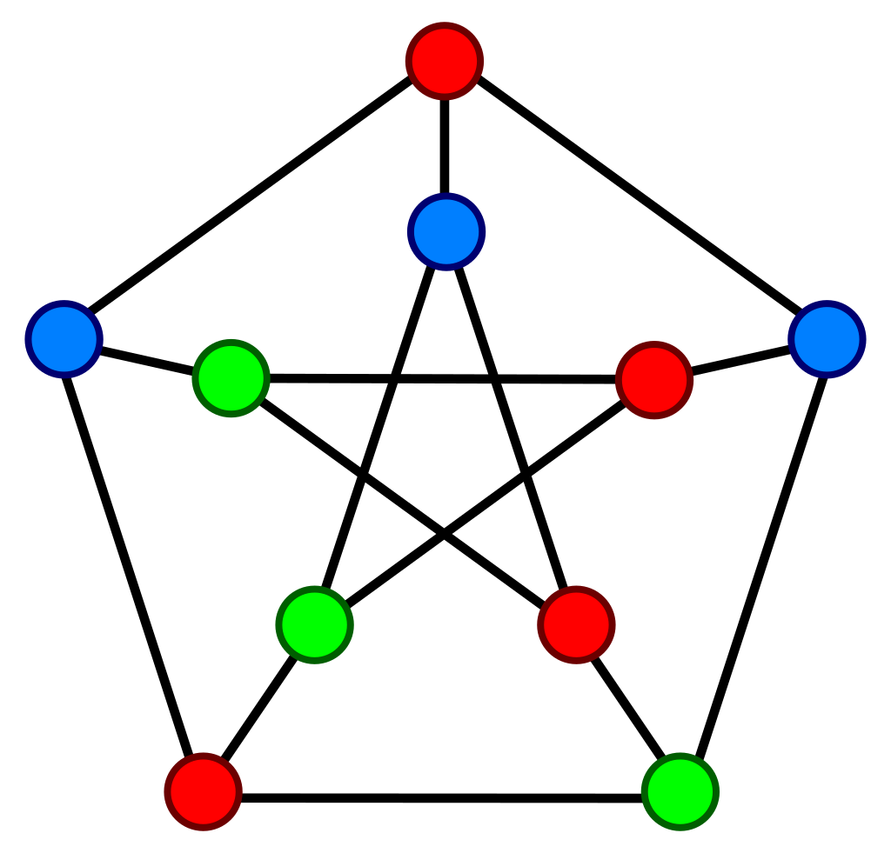
https://en.wikipedia.org/wiki/Graph_coloring#/media/File:Petersen_graph_3-coloring.svg
Algorytm Jonesa-Plassmanna
Klasyczne heurystyki zachłanne, np. największy stopień najpierw (largest-first) czy najmniejszy stopień na końcu (smallest-last), kolorują wierzchołki po kolei. Jones i Plassmann (1993) zauważyli, że każdy zbiór niezależny można pokolorować naraz, bez konfliktów:
- Przypisz wierzchołkom losowe, różne liczby (wagi).
- W każdej rundzie niepokolorowany wierzchołek, którego waga jest większa niż wagi wszystkich jego niepokolorowanych sąsiadów, dostaje najniższy kolor niezajęty przez sąsiadów. Te wierzchołki tworzą zbiór niezależny, więc działają równolegle.
- Powtarzaj, aż wszystkie wierzchołki będą pokolorowane.
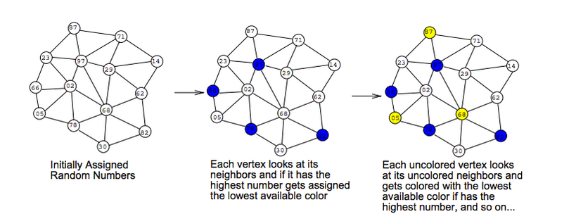
https://ireneli.eu/2015/10/26/parallel-graph-coloring-algorithms/
Jones-Plassmann: symulacja
Graf Petersena, w wierzchołkach losowe wagi.
- Czarna obwódka: wierzchołki wybrane w bieżącej rundzie, czyli lokalne maksima.
- Kolor = najniższy wolny numer koloru.
Jones-Plassmann w Pythonie
import random
def jones_plassmann(graf, seed=None):
rnd = random.Random(seed)
waga = {v: rnd.random() for v in graf} # 1. losowe wagi
kolor, runda = {}, 0
while len(kolor) < len(graf):
# 2. lokalne maksima wśród niepokolorowanych: zbiór niezależny
wybrane = [v for v in graf if v not in kolor and
all(waga[v] > waga[u] for u in graf[v] if u not in kolor)]
for v in wybrane: # 3. może iść równolegle
zajete = {kolor[u] for u in graf[v] if u in kolor}
kolor[v] = min(set(range(len(graf))) - zajete)
print(f"runda {runda}: {wybrane}")
runda += 1
return kolor
# graf Petersena: pięciokąt 0-4, pentagram 5-9 i szprychy i-(i+5)
E = [(i, (i + 1) % 5) for i in range(5)] + [(i, i + 5) for i in range(5)] \
+ [(5 + i, 5 + (i + 2) % 5) for i in range(5)]
graf = {v: [] for v in range(10)}
for a, b in E:
graf[a].append(b); graf[b].append(a)
kolor = jones_plassmann(graf, seed=1)
assert all(kolor[a] != kolor[b] for a, b in E)
print("kolory:", [kolor[v] for v in graf])
runda 0: [1, 4, 7] runda 1: [2, 5, 6] runda 2: [0, 3, 9] runda 3: [8] kolory: [2, 0, 1, 2, 0, 1, 1, 0, 0, 2]
- Pętla
for v in wybranemoże być równoległa: wierzchołki wwybranenie sąsiadują, więc nie czytają nawzajem swoich kolorów. - Graf Petersena ma stopień 3, więc wystarczą co najwyżej 4 kolory. Tu wyszły 3, a mniej się nie da (graf ma cykl nieparzysty).
Sprawdź się
Ile faz potrzebuje sortowanie odd-even dla n elementów w najgorszym przypadku?
n faz (np. tablica posortowana odwrotnie). Przy n/2 procesorach każda faza trwa O(1), więc czas to O(n).
Co ogranicza przyspieszenie merge sort, gdy dzielimy równolegle, ale scalamy jednym procesorem?
Rozpiętość to ok. 2n przez sekwencyjne scalanie, więc T₁/T∞ ≈ log₂ n / 2.
Który algorytm z wykładu przetwarza równolegle wierzchołki jednej warstwy, a warstwy po kolei?
BFS warstwami (level-synchronous). Jones-Plassmann też działa w rundach, ale runda to zbiór niezależny, a nie warstwa odległości.
Ćwiczenia
Uzupełnij prawo Amdahla (f: część równoległa, p: procesory):
def amdahl(f, p): return 1 / () amdahl(0.9, 16) # 6.4
Uzupełnij sortowanie odd-even:
for faza in range(): for i in range(, n - 1, 2): if a[i] > a[i + 1]: a[i], a[i + 1] = a[i + 1], a[i]
n faz wystarcza zawsze. Faza parzysta zaczyna od pary (0, 1), nieparzysta od (1, 2), czyli od faza % 2. Druga pętla w każdej fazie może być równoległa.
Podsumowanie wykładu
- Przyspieszenie S = T₁/Tₚ ogranicza część sekwencyjna (Amdahl) i rozpiętość grafu zależności: Tₚ ≥ max(T₁/p, T∞).
- Projektowanie wg Fostera: podział, komunikacja, aglomeracja, mapowanie. Zbyt drobne zadania zjada narzut, zbyt grube nie wykorzystują rdzeni.
- Redukcja i scan liczą się drzewem w log n krokach, jeśli operator jest łączny.
- Sortowanie: odd-even w O(n) z n procesorami, merge sort ogranicza sekwencyjne scalanie, scalanie odd-even je zrównolegla.
- Grafy: BFS warstwami z barierą, DFS z kradzieżą pracy, kolorowanie przez zbiory niezależne. Uwaga na wyścigi: łagodne vs szkodliwe.
Laboratorium: sprawdzenie Projektu I.
Następny wykład (25.11, zdalny): Thread Pool, Executory w Python. Tam pule, które dziś mapowały nasze zadania na procesory.